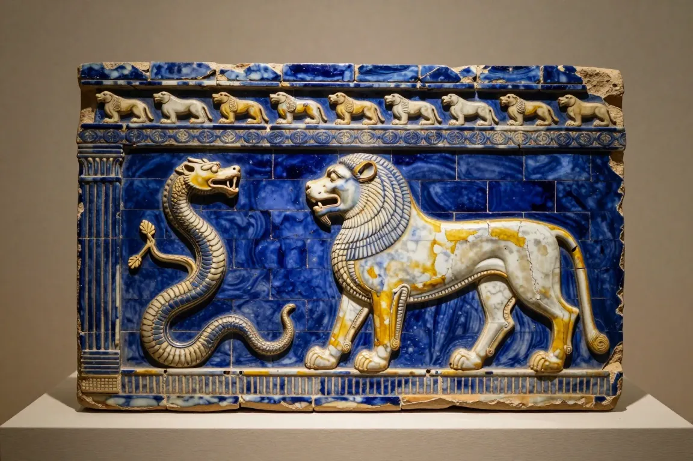

Moulded bricks of fired clay that Neo-Babylonian builders glazed in blue, yellow and white. They set the bricks into walls of lions, bulls and dragons on the gates and the Processional Way of Babylon.

Core thesis
A mud-brick city wall becomes a royal image when each brick is moulded, glazed blue and fired, so that the animals of the gods stand in a row along the road.
Design principles
Mould each brick as one part of a relief, and number the bricks on the side for the builders.
Glaze the visible face in a vivid blue, and keep the figures in white, yellow and black.
Set the animals in a rhythm: a lion, a bull or a dragon every 1 to 2 m along the wall.
Frame a field of figures with bands of rosettes and a plain blue ground.
Lay the bricks in courses, so that the joints of the wall run along the lines of the relief.
Fire a moulded brick once more after the glaze; a thin bitumen mortar binds the courses.
Face the walls of gates and processional streets only: the ordinary city stays in plain brick.
Anti-patterns
A smooth, flat wall of one colour with no moulded figures
A single large slab in place of numbered bricks
Pale, translucent glaze with no deep blue
Figures that fill the whole wall with no blue ground